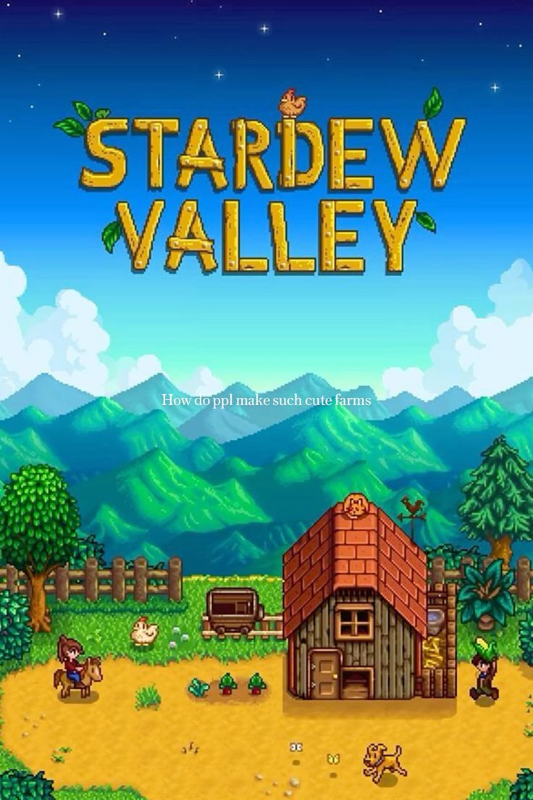
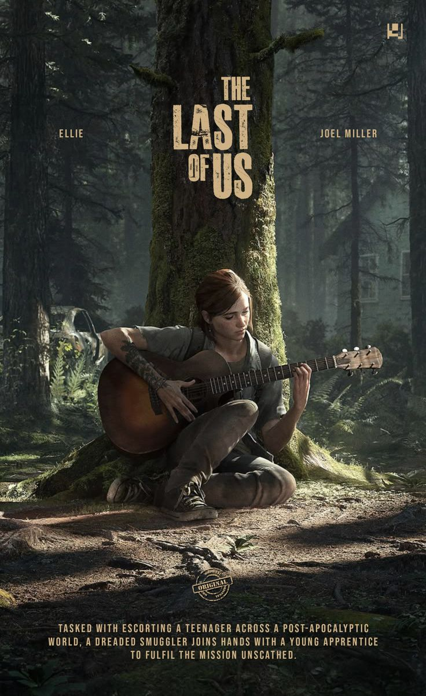
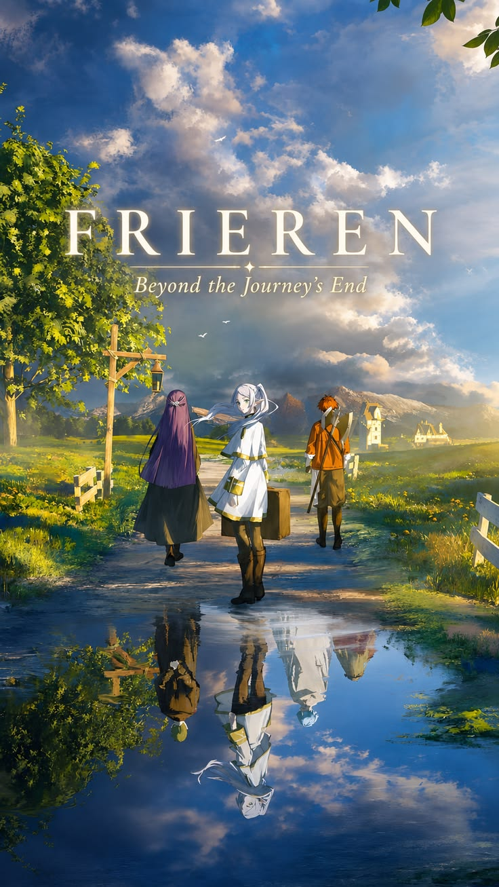
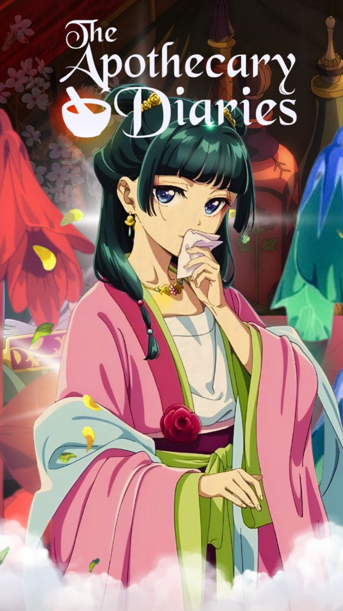

Gosto muito do ambiente aconchegante do jogo, de cuidar da fazenda, criar animais e interagir com os moradores da vila.
ABC Bolinhas · Perfil de integrante
Os universos virtuais, imagens e histórias que mais curto acompanhar.

Gosto muito do ambiente aconchegante do jogo, de cuidar da fazenda, criar animais e interagir com os moradores da vila.

Adoro a liberdade criativa de construir bloco a bloco, explorar cavernas, sobreviver e jogar junto com amigos.

Incrível pela narrativa profunda, personagens marcantes e a ambientação pós-apocalíptica envolvente.




Aprecio animes com boas histórias, personagens marcantes e cenários bem detalhados.